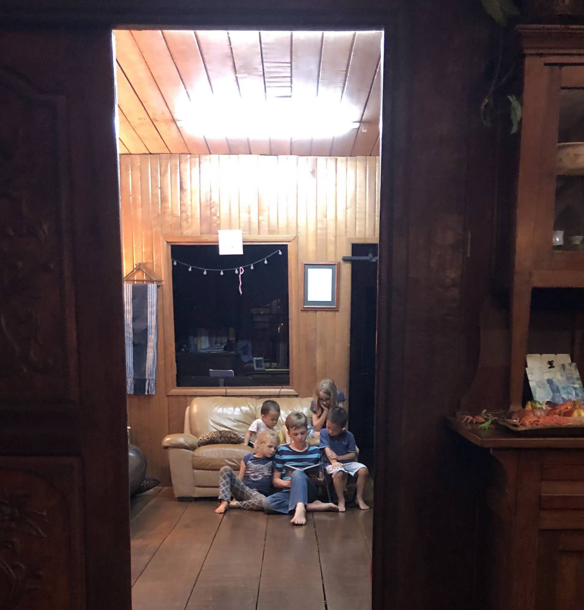

Ratanakiri
Dear Brothers and Sisters in Christ,
In the first half of November we were invited to participate in a modular Pastoral Training program in Banlung, Ratankiri (a province in the northeast corner of Cambodia bordering Laos and Vietnam). They meet twice a year for four days for an intensive, modular style training covering a single topic at a time.
The program started in 2017, and is meant to be a ten year program. Students in the program are mostly older men who are already involved in teaching and/or pastoral ministry as well as women involved in children and women’s ministries or Bible translation work.
Our current ministry focus (apart from the local church) is at the Phnom Penh Bible School, and we plan to continue on there for at least the next couple years. However, we are still praying about whether or not we want to focus more on theological education outside of Phnom Penh in the future. The main motivation is for our involvement in theological education to be more closely tied to the local church. When students have to leave their home church and ministry to come to Phnom Penh for further biblical training, it naturally creates some level of separation from their sending church during their time at school, and potentially after as well. This also makes it harder for teacher’s and school administrators to have a close, long-term relationship with the sending church too.
Accordingly we were excited to accept their invitation and join in on the session, especially since the Phnom Penh Bible School is in between semesters. As it turned out, we are grateful to God that we were able to go, as the trip ended up being a great blessing to us in many ways.
Our Time at the Training
The month of November started off on a high note. Our church (Shalom Phnom Penh) was celebrating it’s 20th anniversary. It was a great reminder of God’s faithfulness, as pastors and church members from around the country gathered to celebrate the work that God has been doing in Cambodia these many years.
Since we were celebrating with the church on the Sunday of the anniversary, we had already missed the first day and a half of the training and were in a hurry to leave for Ratanakiri, a 10-hour drive. Another missionary family from the Phnom Penh Bible School lent us their car for the two-week trip (big thank you to the Martins!) so right after things wrapped up at the anniversary service, we loaded up the car and headed out.
Encouraged by their Faithfulness

First of all, I was struck just the sheer number of students. I hesitate to mention this at all, given the perpetual and long-standing abuse of numbers and statistics in newsletters and reports. At the same time, as long as we are wary to not equate numbers with “success” in ministry (a slippery word if there ever was one), one cannot but help be encouraged by the faithfulness of these brothers who sacrificed much to be here, coming of their own expense and paying tuition out of their own pocket no less. There was no air-conditioning, no all-expense paid destination hotel conference rooms, and no fancy presentations (unless you count words stuck to flannelgraph and banner printouts). Just the teaching of the Word and Christian fellowship, from morning until evening.
In total there were about 60 students in all, including both those on the “credit track” (as in those who do homework, take the tests at the end of sessions, and receive a certificate at the end of ten years) and those who are just “auditing”.
The numbers aren’t staggering from Western standards, but for us at least it was incredibly encouraging when seen in the context of where we were, how young the church is, and what they were coming to be a part of. In 1994 when the Crowley family first arrived in Ratanakiri Province, there were no churches and perhaps no Christians at all. Now at this point, not quite thirty years later, you have around sixty men and women, all actively involved in ministry, giving up their holiday and at their own expense, to hear the teaching of God’s Word and the Gospel of His Son.
Encouraged by our Unity in Christ
Participants visiting from Steung Treng ProvinceWhat’s more, these faithful saints are coming from different villages, different churches, different denominations and even different ethnic minorities including the Brao, Jarai, Krung, Tampuan and Kravet. I was told that for this session there was also a group visiting for the first time including Laotian and Bunong believers, not to mention of course the ethnic Khmer. All present could speak Cambodia’s national language Khmer, but for many it was their second language. Even the teachers themselves came from different sending organizations (CMA, EMU, OMF, Pioneers and then us, from ACTION).
What united us however was our one baptism into our one Lord Jesus Christ, through His one Spirit. For me at least, being my first time visiting, it was a testimony to the transforming power of the Gospel.
A somewhat related prayer request: many of the ethnic groups represented have a New Testament in progress or completed in their native language, but there is still much need for an Old Testament translation and other resources. Please pray for the churches of all the “tribes, tongues, and nations” represented in Ratanakiri and their continued growth.
Encouraged by the Teaching
This unity also led to a remarkable time in the Word together. We had a great time diving into Romans 6-8 together, learning about and applying all the theological truths that are in these rich chapters. The three chapters were split into 29 lessons - for my part I taught just two sessions, one on Romans 8:16-17 and another on Romans 8:28. Most of my role was instead just listening and watching.
By the time we arrived Monday afternoon we were already half-way into Romans 7, so I missed Romans 6 altogether. Even still, I didn’t teach at all until the end of day Tuesday, so I had a full day and a half to listen and benefit from the other teachers before it was my turn to get up and teach and I can confidently say that my lesson was much improved by having heard the others teach first.
Dinner with Ratankiri MissionariesFor me personally it this was the first time I’ve participated in a format like this. There were eight different men teaching, but we were all teaching through the same passage. In some ways, it is a cross between a conference and a Bible school. Like an intensive course at a Bible school, the four days were packed from morning to evening learning and interacting with one single passage. However, like a conference we got to tag team through the passage, as opposed to a normal intensive course at a Bible school which would have just a single teacher.
What was incredibly impactful for me personally as a teacher was the synergy we had as teachers, facilitated by the theological unity of the teachers involved. By the time it was my turn to get up to teach, it was as if I was loaded into a slingshot and fired onto the stage, full and charged from the teaching of the other brothers, ready to hit the ground running. I’m sure preaching in a conference would have a somewhat similar dynamic, but here it was even more so as we opened up the same three chapters of Romans together.
What a blessing it was to have this opportunity to participate in something like this, and a good reminder for me personally especially in a season where disunity and discouragement in ministry are often more obvious and more often discussed.
Encouraged by their Love for the Word
We were also encouraged by the sharing time at the end of the day. At the end of the whole training there was also a separate time allotted where students could share about what they learned throughout the four days, but this was a separate time where some of the men were invited to share about some aspect of their ministry.
One such time in particular, some of the men from 3-4 different churches shared about their experience starting Bible reading groups together. They would meet with men and women from their church or from their neighborhood and just read the Bible - there is no song time, no lesson or sermon, or even discussion time. All of these activities are great of course, and sometimes at the end of the hour after the closing prayer there was often some discussion or sharing, but the point is to just set aside time to be in the Word together.
Overall, it was just a good reminder and challenge to do what it takes to have regular, purposeful time in the Word and help others do the same.
The Rest of our Time in Ratanakiri
Meeting another missionary family who has been in the area for 14 years, working with a minority group and currently translating the BibleThe training was only for four days of our trip - we also had another week and a half to explore the area, visit the church, spend time with the other missionaries, as well as spend time together as a family. Our team (Action Cambodia) has worked to various degrees with the families who live and serve up there for a long time now. However, this was our first time meeting them ourselves and our first time in this province overall.
We had a great time visiting the other families there. For the curious, you can read more about two of the families, the Mallows and the Crowleys, here. Both are veteran missionaries who have paved the way for others like them to join in the work as well.
 Playing with children of another faithful missionary couple who have been there about 15 yearsThe Crowleys were our initial contact there, and were the ones who invited us to join in the training. We had a great time of fellowship with them and all the other families as well, as we got to know them during our time there. All of them sacrificed much to live and serve in this region of Cambodia.
What’s Next
We have been invited to collaborate with the Ratankiri Pastor’s School more in the future, and we are praying about what our involvement should be. The next session will be in mid-April, if we are able to join in. It might just be that next time, I go up by myself, since it is much more of a major effort to travel with the whole family.
There is the possibility of potentially moving up there in the future as well. We are committed to continue teaching at the Phnom Penh Bible School for the next two years, but after that will have to decide if we want to stay there or if we might be better used for the Kingdom in Ratanakiri.
Prayer Requests
Please pray for:
- The pastors who were part of the training, that the lessons learned would bear fruit in their lives and ministries.
- The churches in Ratankiri, for their health and continued growth in the Truth.
- The missionaries who are involved, for their personal fidelity and corporate unity.
- Wisdom for what our future involvement might be with the Ratanakiri Pastors’ School, and that we would seek the Lord’s will and not our own.
- Ryan’s preparation for the upcoming school semester at Phnom Penh Bible School, that Ryan would be moved and motivated out of love for the students and that classes would be arranged as to help students grow in knowledge of the Word and love for God.
- Rebekah’s lessons for the children at our church, and most of all that God would transform the hearts of the children and stir up greater and greater conviction in all the Sunday School teachers of the importance of the eternal fate of these boys and girls.
Visiting KaChanh waterfall on a scary bridge A field of flowers and some jackfruit! Silly boys enjoying their smoothie Papa and Anna
For His glory,
Ryan and Rebekah